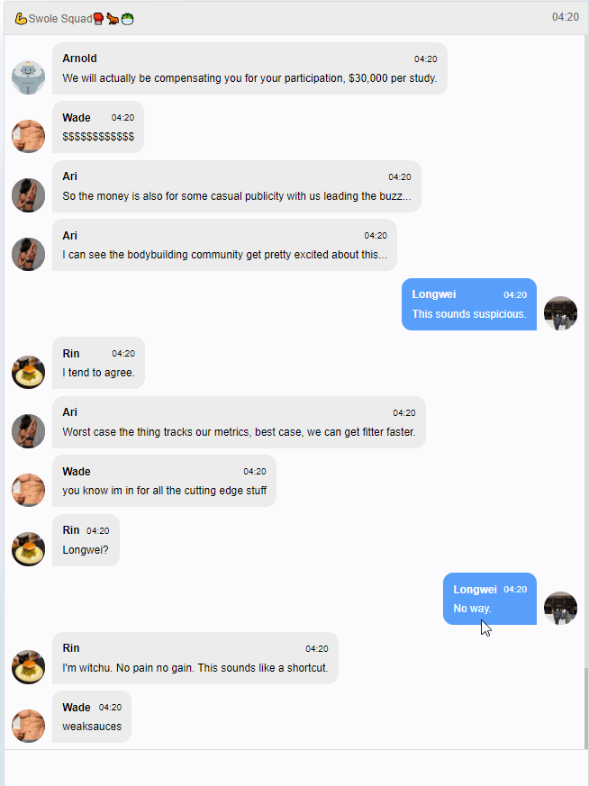

💪Swole Squad🥊🐜🥗 is a game I submitted for the LD48 game jam back in April.
Play at: https://hinerz.itch.io/swole-squad or http://hinasakazaki.com/ChatHorror/
GitHub: https://github.com/hinasakazaki/ChatHorror
Overview
Inspired by some story-telling chat apps, I decided that for this Ludum Dare, I would make a chat based novel game.
Rather than aesthetics or technology, I tried to focus on the emotions text and sound can trigger.
A chat screen is something we’re used to seeing – the more realistic it is, the easier it is for the player to immerse as the recipient of the messages, and someone making choices on what messages to send.
By building a generic framework, I can also share the library with others if they want to tell a story using a chat interface.
The code right now is in no shape for that (super messy), but it is super simple – just 300 or so lines of javascript. Sometime I’ll get around to refactoring it and publishing it as its own library.
This time, I also didn’t create much assets – just the Arnold icon, took existing pictures I took (Rin’s icon, photos, and Longwei’s icon), as well as royalty free images for Ari and Wade. That was also fun, but also felt a little unpersonal at times.
There’s something nice about being able to create your own assets for a game you’re creating, rather than “findings ones that fit”.
I composed and created all music and SFXs using Famitracker and Audacity. My favorite, “Want to be Swole”, which layered with “Unsettling Level 1” played at the climax features a reversed and distorted track of me talking about being swole. I really love how kitschy this all came together.
Story
Writing the story took the most time.
During the 48 hours (with full sleep) I didn’t get to create full branching and alternative endings, but I really enjoyed writing the different characters.
Ari, Longwei, Rin and Wade’s messages all take a bit from how I talk on the internet, and my friends and coworkers noticed that as well. Writing these characters were a joy – they’re a positive and healthy group of adults who share a common interest.
I tried to incorporate themes of optimizing the self and body, body positivity, health, and masculinity, but ultimately, I wanted it to be scary in a simple way that wasn’t too thought provoking.
During this quarantine, there’s a lot of chat groups around, and I’m sure many people are part of chat groups where they’ve never met the other people in the group. I imagine that was the case for Longwei, where he had met Ari at mindfulness camp but hadn’t met Wade or Rin. But thanks to their common interests, they can establish trust to become part of a user testing group that leads them to their demise.
I hope players get a little bit spooked by the possibility that something may take over their every day chat groups…